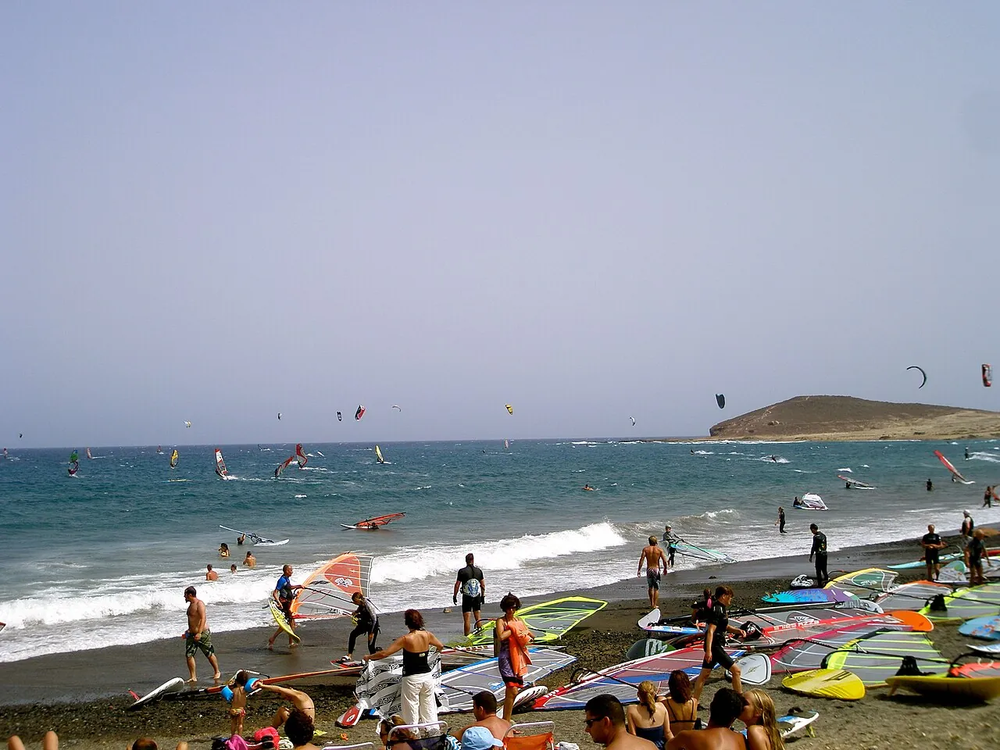

El Médano
Tenerife, Espagne · windsurf, kitesurf

Station de glisse du sud de Tenerife, dominée par la Montaña Roja. Les alizés accélérés par l’île y soufflent presque tous les jours d’été.
- Lieu
- Tenerife, Espagne
- Niveau
- Intermédiaire
- Activités
- windsurf, kitesurf
- Type d'eau
- Mer / océan
- Coordonnées
- 28.04, -16.54 (position approximative du secteur)
Dangers à connaître
- Vent accéléré et rafaleux.
- Clapot et vagues côté large.
Le conseil d'Ocean Buddy
Le kite se pratique dans la zone dédiée, au sud de la Montaña Roja.
Ouvrir dans Ocean Buddy Télécharger sur l'App Store
Source : Fiche Ocean Buddy · septembre 2026 · à vérifier localement.